Robot Mode Enable
Robot Logic
-
The complete Robot Logic will be active, if the license for “Robot Interface” is activated and then the parameter “Robot Option” is ON in the PLC options page.
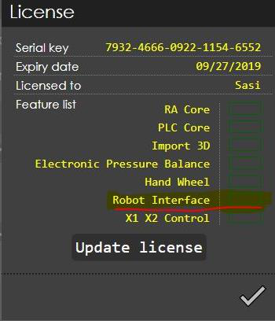
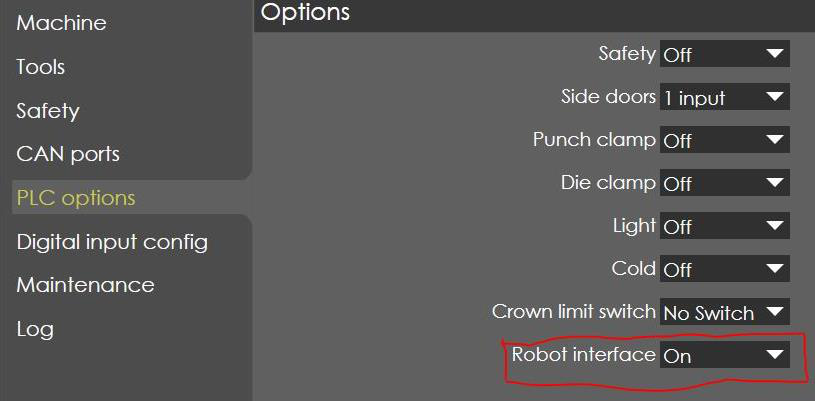
-
When the “Robot Option” is selected in the PLC, then the input “Robot Auto Mode” will activate the robot functions. If Laser Safe is connected, then the Bend Guard mute is also activated.
-
If all the axes are homed and “Robot Auto Mode” input is active, a message “Robot mode key is active” will be displayed, then the controller goes to “Stop Mode” and “Start Button” control in the machine is transferred to Robot control of “Program Start” input.
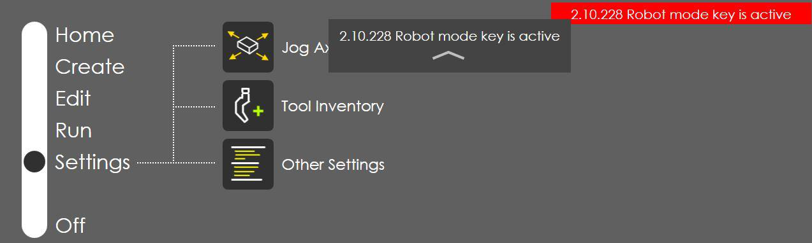
-
The input “UDP_MoveEnable” from the Robot will be used as “Foot Pedal Open” signal in order to reset the errors, move the RAM to UDP under error condition etc., except during “Opening Phase”.
-
The “Press OK” output signal from the NC will be ON, if Homing of all the axes are completed, no errors, Program in Auto mode and “Robot Auto Mode” is active.
-
The “NC Start” output signal from the NC will be ON, if “Program Start” input from Robot controller is ON and the controller goes to “Start Mode” (Green Colour LED is ON in the Panel).
-
During this step, if “Program Start” input from Robot controller is ON, there are 3 possibilities of errors as follows:
-
If program in Semi mode, then there is error message “Machine not in Auto Mode”:
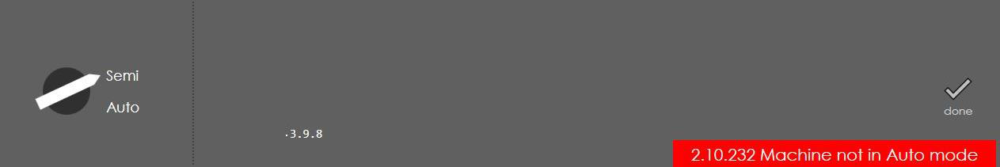
-
If below the UDP position, then there is error message “Move RAM to UDP position”:
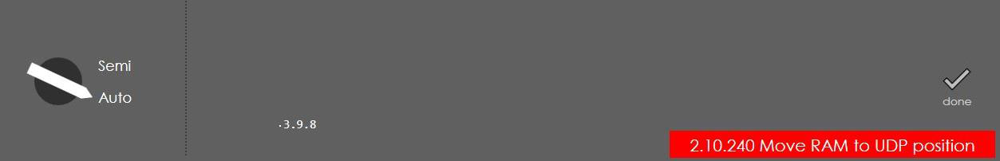
-
If start axes is not selected as “TDC External”, then there is error message “Step Change External not selected”:
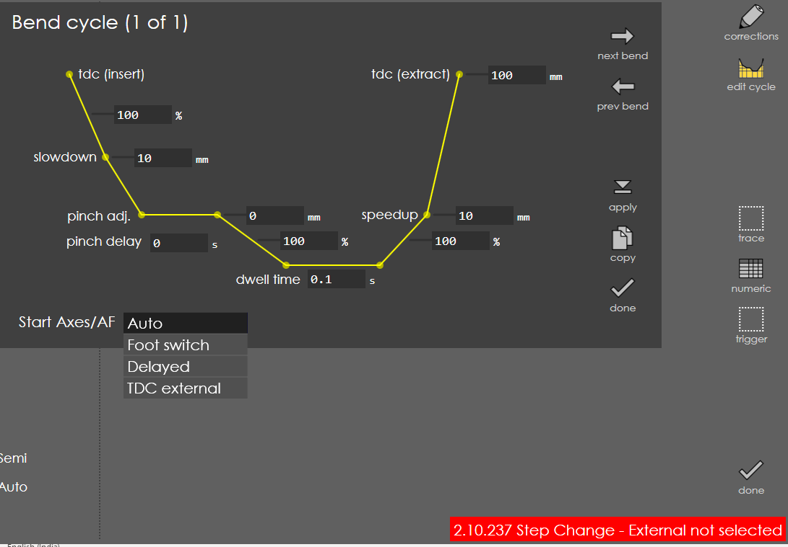
-
-
Once all the above conditions are met and the machine is in start mode, the Foot pedal “Close & Open” signals are not valid hereafter and the machine waits for the Robot move signals.
Foot pedal Close Deactive = “NC Start” is active;
Foot pedal Open Deactive = “NC Start” is active -
Now the program will be waiting for “Step change” signal from the Robot controller to initiate the Backguage movements.
-
If this bend cycle is the first bend, then “First Bend Active” signal is high, else if last bend then “Last Bend Active” signal is high, else both the signals will be low. If the program consist only one bend, then both the signals are active.
-
When the “Step change” signal is ON, then the Backguage axes are positioned and the “Backguage InPos” signal is set to High, now the machine will be waiting for the “Fast Down Enable” or “Clamp Move Enable” signal from the robot controller. In this step, the “RAM Moving” signal will be always low.
-
When the “Fast Down Enable” signal is ON, the RAM moves to mute point and the “Below Mute point” signal is set to High, now the machine will be waiting for the “Clamp Move Enable” signal from the robot controller.
-
When the “Clamp Move Enable” signal is ON, the RAM moves to pinch point and the “Clamping point” signal is set to High, now the machine will be waiting for the “LDP Move Enable” signal from the robot controller.
-
When the “LDP Move Enable” signal is ON, the RAM moves to LDP point and the “LDP reached” signal is set to High, now the machine will go to dwell state and waits here until the completion of Dwell time set in the current bend cycle.
-
When the dwell time is completed and “LDP Move Enable” signal is again ON, the RAM is moved up to the decompression point and the “EoD_Point” signal is set to High, now the machine will be waiting for the “UDP Move Enable” signal from the robot controller.
-
When the “UDP Move Enable” signal is ON, the RAM moves to UDP point and the “UDP reached” signal is set to High, now the machine will be waiting for “Step change” signal from the Robot controller to initiate the Backguage movements for next bend cycle and continuous from step 6 to step 11.
-
From step 7 to step 11, the “RAM Moving” signal will be high during Ram movement and low at the end of each step, to enable the Robot controller to issue the different steps of move command to machine.
-
During any of the above bend step, if the “Program Abort” signal from Robot controller is set High, then all the moving axes (including RAM) are quick stopped and the “Press OK” & “NC Start” signal is deactivated, with the following message display:
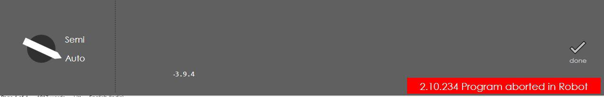
Operating Modes
Manual mode
For manual feeding, manual mode must be selected using the key switch. The press brake is controlled with the control desk by this means. During manual mode without BendGuard or another active optoelectronic safety device, the press beam moves with a working speed as the machine data (See machine operators manual). With an active optoelectronic safety device, it can move with a rapid downward speed also as shown in the table below.
| Working speed (closing movement) | Rapid downward movement | |
|---|---|---|
B41 TruBend 1320 |
9 mm/s |
110 mm/s |
B41 TruBend 1225 |
12 mm/s |
170 mm/s |
B41 TruBend 1150 |
14 mm/s |
180 mm/s |
B41 TruBend 1100 |
15 mm/s |
220 mm/s |
B41 TruBend 1060 |
20 mm/s |
180 mm/s |
| Working speed (closing movement) | Rapid downward movement | |
|---|---|---|
B42 TruBend 1320 |
9 mm/s |
110 mm/s |
B42 TruBend 1225 |
10 mm/s |
170 mm/s |
B42 TruBend 1150 |
10 mm/s |
180 mm/s |
B42 TruBend 1100 |
10 mm/s |
220 mm/s |
B42 TruBend 1060 |
10 mm/s |
180 mm/s |
Robot mode
During operation with the robot, the press brake is sheet loaded by the robot. In "TruBend with robot" operating mode, the foot switch must not be removed.
If operating mode "TruBend with robot" is selected, the Press Beam Down foot switch is inactive. It is therefore not possible in robot mode to use the Press Beam Down foot switch to trigger a downward movement of the press beam.
The Press Beam Up foot switch and the Emergency Stop push-button on the foot switch function continually. The bending program can also be selected, started and stopped manually. The hydraulic system can always be switched on and off manually.
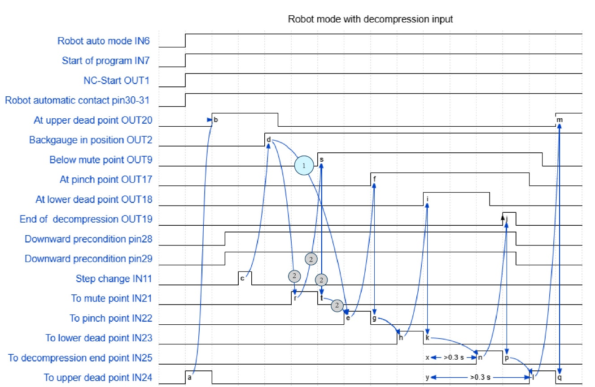
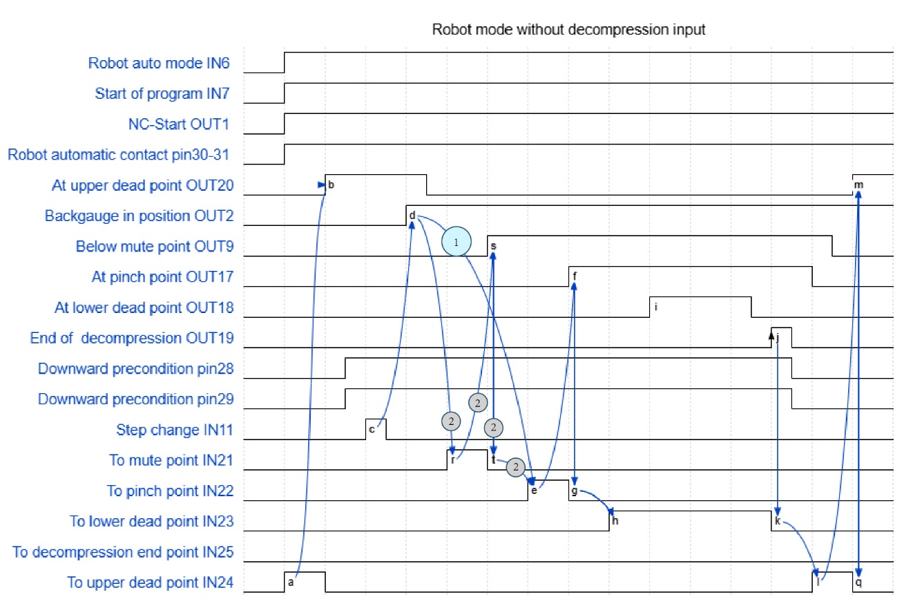
Teach mode
Usually, the bending cell is always working in the auto mode. But when the operator needs to perform certain activities in bending cell, like robot teach-in, press-brake status checking etc., the press brake and the robot needs to move with safety speed. In this case, the bending cell is operating in Teach mode.
The teach mode of the press brake is automatically activated when any of the bending cell’s safety door is opened. This safety door’s signal is passed to press brake via PIN 30 (Robot Automatic Contact 1) and 31 (Robot Automatic Contact 2).
And the teach mode of the press brake can be realized via the following processing sequence:
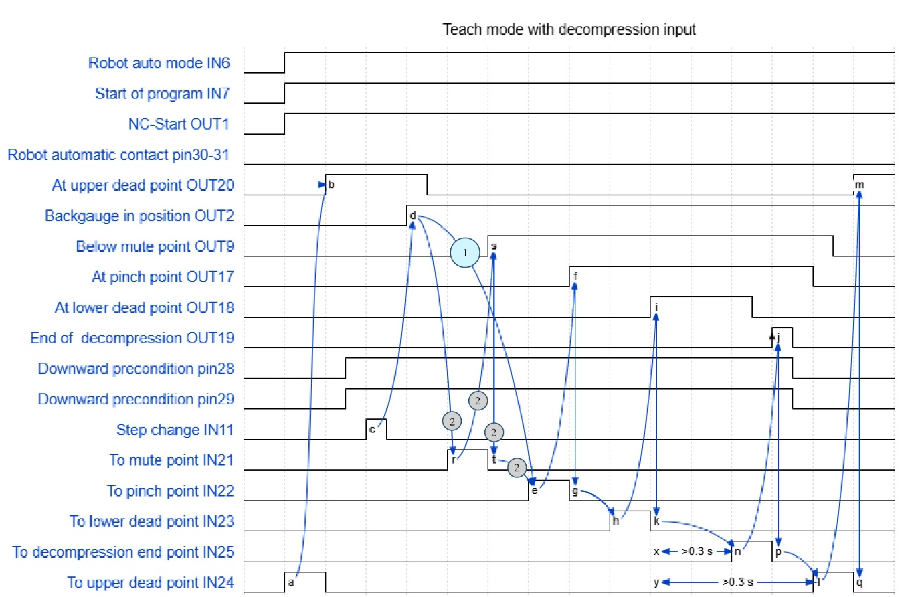
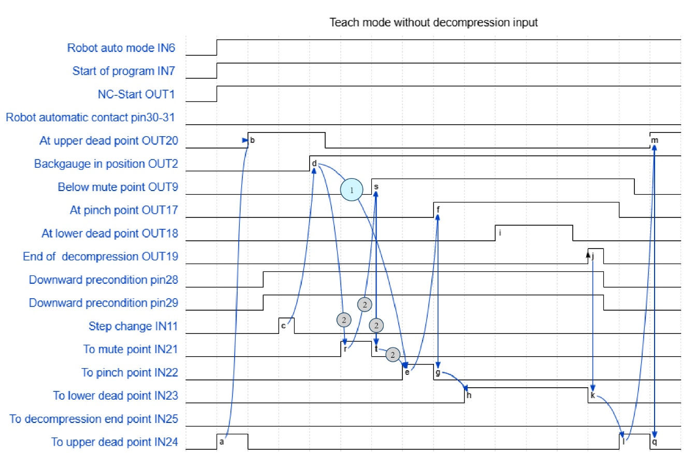
Auto mode
When the safety doors of the bending cell are all closed, the press brake will automatically switch back to the automatic operation mode with high speed. And the processing sequence is realized as follows:
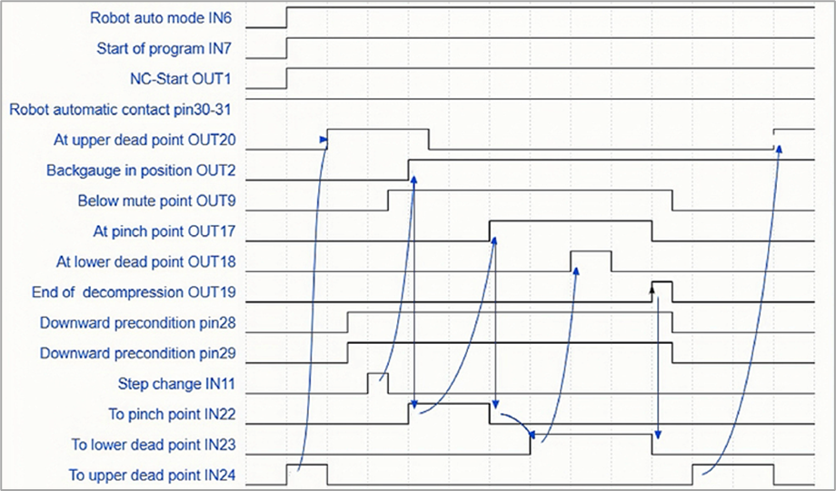